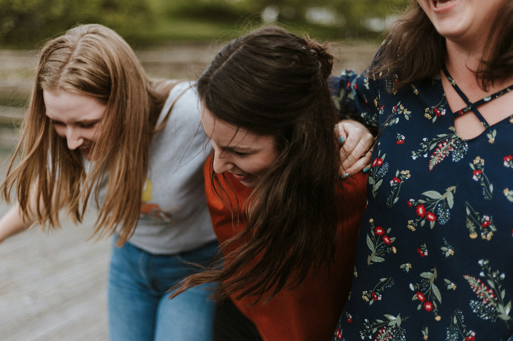
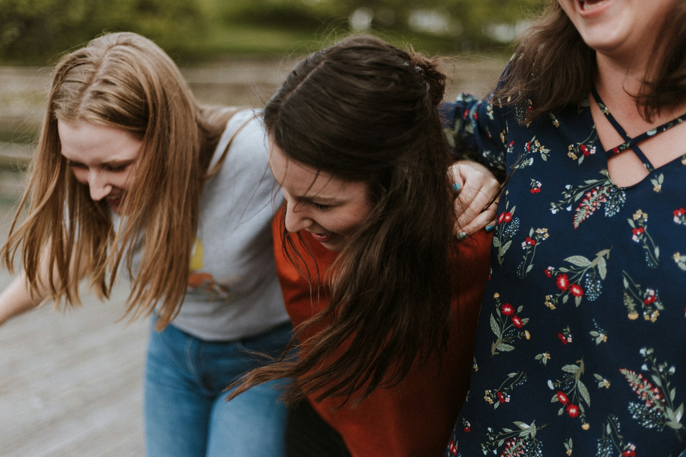

SMA
SMA
SMA
SMA
selective mutism association
Founded in [Year], the Selective Mutism Association began as a small group of parents, educators, and professionals dedicated to supporting individuals with selective mutism. Over the years, it has grown into a nationally recognized organization, offering resources, advocacy, and community support for those affected by the condition. Through research-driven initiatives, partnerships with mental health professionals, and public awareness campaigns, SMA has played a pivotal role in fostering understanding and breaking down communication barriers.
The triathlon, held at [Event Location], featured a grueling yet rewarding course, including a [distance] swim, [distance] cycling segment, and a final [distance] run. Athletes of all backgrounds participated, but SMA’s team stood out—not only for their athletic performance but also for their inspiring message of inclusion and advocacy.


 
